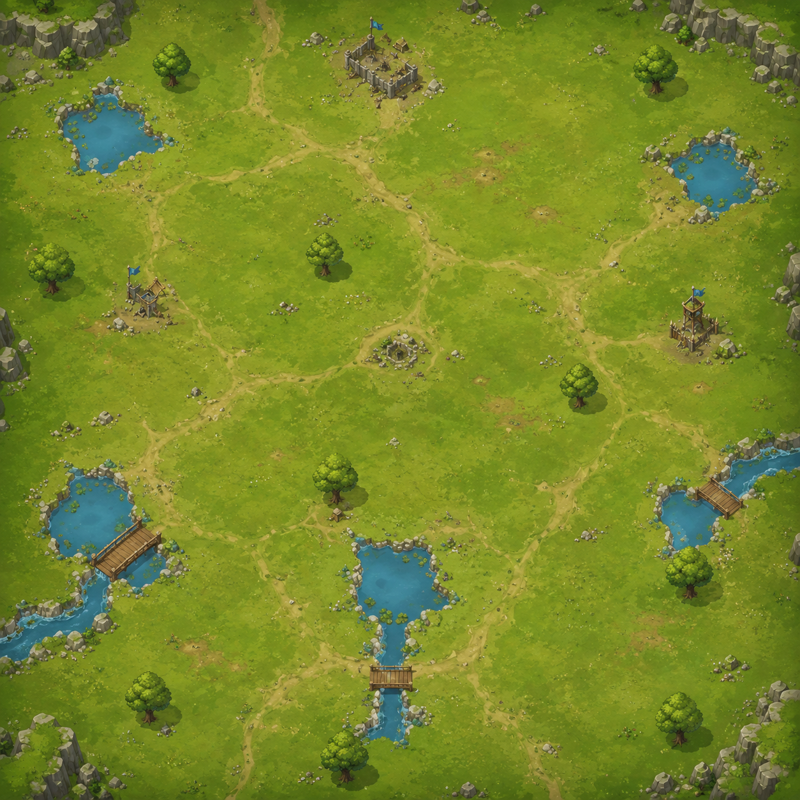

BASTION DEFENSE
Loading your fortress…
BATTLE MAP

Map 1 available
MEADOW PASS • COMMANDER EDITION
BASTION
DEFENSE
Hold the pass. Shape the route. Make every coin count.
LANDSCAPE DEFENSE • DESKTOP + MOBILE
BUILD ON THIS PAD
Cannon Turret
🪙 0
Tap to select
Cannon Turret
LV 1
🧪 DEV TEST TOOLS temporary
0 enemies on field
BASTION CORE20 / 20
ACTIVE POWER
—
x0
TEMP. OBSTACLE
—
0s